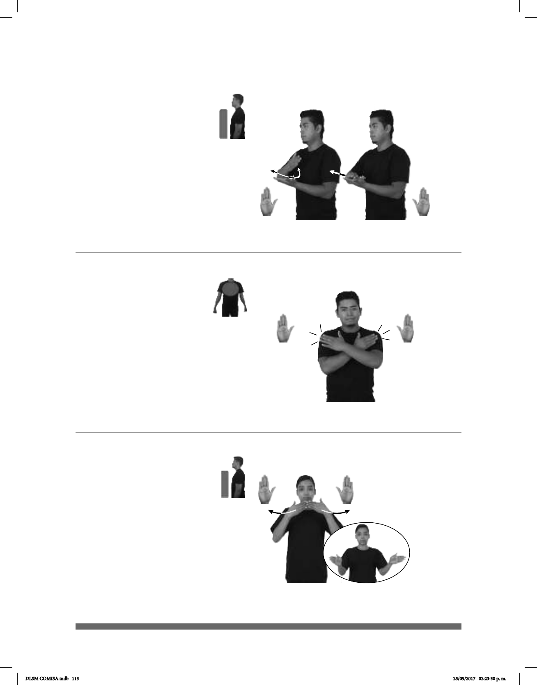

113
Abono (B-P 7)
Abrazar (B-P 8)
AHORA TODO DINERO pro-NOSOTROS-DE-TRES NO-PODER PAGAR
pro-NOSOTROS-DE-TRES PODER ABONO++
No podemos pagar todo el dinero ahora, podemos dar abonos.
dm-ANA
derecha
ABRAZAR
izquierda
dm-JUAN PORQUE pro-ELLA EXTRAÑAR
MUCHO-a-él
Ana abraza a Juan porque lo extraña mucho.
Seña: SB
MD y MB B-P.2
MD la palma inicia
hacia adentro y termina hacia abajo, MB
palma hacia arriba con dedo pulgar
hacia afuera.
A la altura del pecho, MD
sobre MB.
MD recto hacia enfrente
repetidamente, rozando a MB con el
lateral.
sust. m. Pago parcial, y
generalmente periódico, de una deuda.
Seña: SS
B-P.2
Palmas hacia adentro.
Sobre el pecho.
Las manos golpean los
hombros repetidamente.
Se esboza una
sonrisa.
Simula la acción de
abrazar a alguien.
v. tr. Rodear algo o a
alguien con los brazos, sobre todo como
muestra de afecto.
Seña: SS
B-P.2
Las palmas inician hacia
adentro y terminan hacia afuera.
Del centro del cuello a los
hombros.
Las manos parten de un
mismo punto y luego se abren hacia los
lados.
1. v. tr. Separar o quitar lo que
impide la entrada, la vista, la circulación,
etc., entre el interior y el exterior de algo o
entre lugares. 2. adj. No cerrado.
1
2
(B-P 9)
POR FAVOR PUERTA-ABRIR
Abre la puerta, por favor.
DLSM COMISA.indb 113 25/09/2017 02:23:30 p. m.